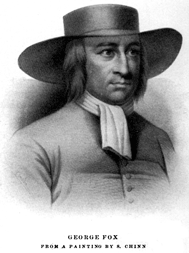

About Quakers
The Religious Society of Friends began in the mid 1600's amid the tumultuous years of England's Civil War. The First Friends were drawn to George Fox, who believed that God dwells in each of us, rather than in holy books or buildings. The name Quaker became popular after George Fox told a judge that he should tremble before the Lord and the judge replied, "you are the Quaker, not I."
Early Friends faced persecution until they came to the haven offered by an influential convert, William Penn, Pennsylvania's first proprietor passionately believed in religious tolerance, constitutional government, trial by jury, and fair and friendly relations with Native Americans.
Today's Quakers
Many of today's Friends originally came from other religious backgrounds and have found a new spiritual home in Quakerism. Friends believe that all people have the same access to God and that God's Inner Light shines through each of us. Quakerism is rooted in Christianity: however, today's Quakers are united as a close religious community of faith, which springs from many different traditions and beliefs.
Quaker Meeting for Worship is simple Friends gather at their meetinghouse in silence and await God's word and guidance. One or more worshippers may break the silence to share an inspired message of hope, joy or thankfulness-or a pressing need or concern. Friends listen carefully and are mindful and accepting of the message. There is no appointed clergy; anyone may minister. No offering is taken. The worship service ends as Friends shake hands.
Faith in Action
Because Quakers believe religious faith should lead to action, we have long been involved in a variety of good works. The keystone of Penn's Holy Experiment was the importance Quakers place on individual rights, which spring from the belief that there is that of God in each person. Among the values Quakers contributed to our nation were freedom of speech, freedom of religion, equality of women, and education for all. Friends today try to live our testimonies of simplicity, equality, integrity, and peace. We maintain a busy network of schools, retirement communities, and nursing homes. While continuing to work with local social issues, Quakers contribute to national ecological and relief efforts, and to the peaceful resolution of conflicts worldwide.